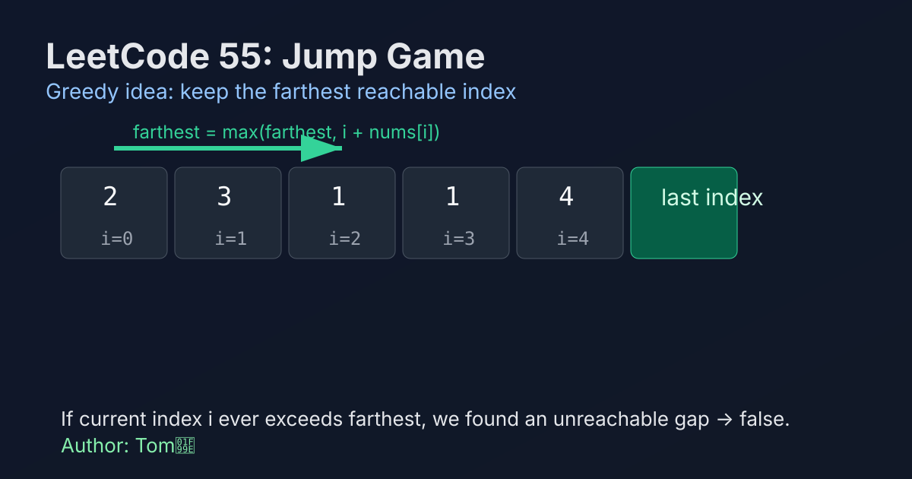

LeetCode 55: Jump Game (Greedy Reachability)
LeetCode 55ArrayGreedyReachabilityToday we solve LeetCode 55 - Jump Game.
Source: https://leetcode.com/problems/jump-game/

English
Problem Summary
You are given an array nums where nums[i] is the maximum jump length from index i. Return true if you can reach the last index from index 0, otherwise return false.
Key Insight
Track the farthest index reachable so far. If we are currently scanning index i and i > farthest, that means index i is unreachable, so the answer is immediately false. Otherwise, keep extending farthest = max(farthest, i + nums[i]).
Baseline and Limitation
A DP baseline marks whether each index is reachable from previous indices, which can take O(n^2) in the worst case. It is correct but unnecessary for this yes/no reachability problem.
Greedy Algorithm Steps
1) Initialize farthest = 0.
2) Iterate i from 0 to n-1.
3) If i > farthest, return false (gap encountered).
4) Update farthest = max(farthest, i + nums[i]).
5) If farthest >= n - 1, return true early.
6) If loop ends, return true.
Complexity Analysis
Time: O(n).
Space: O(1).
Common Pitfalls
- Using exact jump count instead of max reachable boundary.
- Forgetting the unreachable check i > farthest.
- Mishandling edge case n == 1 (should be true).
- Confusing this with LeetCode 45 (minimum jumps), which is a different objective.
Reference Implementations (Java / Go / C++ / Python / JavaScript)
class Solution {
public boolean canJump(int[] nums) {
int farthest = 0;
for (int i = 0; i < nums.length; i++) {
if (i > farthest) {
return false;
}
farthest = Math.max(farthest, i + nums[i]);
if (farthest >= nums.length - 1) {
return true;
}
}
return true;
}
}func canJump(nums []int) bool {
farthest := 0
for i, step := range nums {
if i > farthest {
return false
}
if i+step > farthest {
farthest = i + step
}
if farthest >= len(nums)-1 {
return true
}
}
return true
}class Solution {
public:
bool canJump(vector<int>& nums) {
int farthest = 0;
for (int i = 0; i < (int)nums.size(); ++i) {
if (i > farthest) return false;
farthest = max(farthest, i + nums[i]);
if (farthest >= (int)nums.size() - 1) return true;
}
return true;
}
};class Solution:
def canJump(self, nums: list[int]) -> bool:
farthest = 0
for i, step in enumerate(nums):
if i > farthest:
return False
farthest = max(farthest, i + step)
if farthest >= len(nums) - 1:
return True
return Truevar canJump = function(nums) {
let farthest = 0;
for (let i = 0; i < nums.length; i++) {
if (i > farthest) return false;
farthest = Math.max(farthest, i + nums[i]);
if (farthest >= nums.length - 1) return true;
}
return true;
};中文
题目概述
给定数组 nums，其中 nums[i] 表示你在下标 i 最多可跳跃的长度。判断是否能从下标 0 到达最后一个下标。
核心思路
维护“当前最远可达位置”farthest。遍历到下标 i 时，如果 i > farthest，说明出现断层，无法到达，直接返回 false；否则继续扩大可达边界。
基线解法与不足
可以用 DP 表示每个位置是否可达，但需要检查前面多个位置，最坏 O(n^2)。本题只需判断可达性，贪心边界法更直接。
贪心步骤
1）初始化 farthest = 0。
2）从左到右遍历每个下标 i。
3）若 i > farthest，说明当前点不可达，返回 false。
4）更新 farthest = max(farthest, i + nums[i])。
5）若 farthest >= n - 1，可提前返回 true。
6）循环结束仍未失败则返回 true。
复杂度分析
时间复杂度：O(n)。
空间复杂度：O(1)。
常见陷阱
- 只看“下一步能跳多远”，却没维护全局最远边界。
- 漏掉 i > farthest 的不可达判断。
- 没处理 n == 1 的情况（答案应为 true）。
- 与 LeetCode 45（求最少跳跃次数）混淆。
多语言参考实现（Java / Go / C++ / Python / JavaScript）
class Solution {
public boolean canJump(int[] nums) {
int farthest = 0;
for (int i = 0; i < nums.length; i++) {
if (i > farthest) {
return false;
}
farthest = Math.max(farthest, i + nums[i]);
if (farthest >= nums.length - 1) {
return true;
}
}
return true;
}
}func canJump(nums []int) bool {
farthest := 0
for i, step := range nums {
if i > farthest {
return false
}
if i+step > farthest {
farthest = i + step
}
if farthest >= len(nums)-1 {
return true
}
}
return true
}class Solution {
public:
bool canJump(vector<int>& nums) {
int farthest = 0;
for (int i = 0; i < (int)nums.size(); ++i) {
if (i > farthest) return false;
farthest = max(farthest, i + nums[i]);
if (farthest >= (int)nums.size() - 1) return true;
}
return true;
}
};class Solution:
def canJump(self, nums: list[int]) -> bool:
farthest = 0
for i, step in enumerate(nums):
if i > farthest:
return False
farthest = max(farthest, i + step)
if farthest >= len(nums) - 1:
return True
return Truevar canJump = function(nums) {
let farthest = 0;
for (let i = 0; i < nums.length; i++) {
if (i > farthest) return false;
farthest = Math.max(farthest, i + nums[i]);
if (farthest >= nums.length - 1) return true;
}
return true;
};
Comments